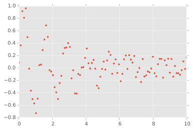

Fitting with lmfit
General-purpose fitting in Python can sometimes be a bit more
challenging than one might at first suspect given the robust nature of
tools like Numpy and Scipy. First we had leastsq. It works, although
often requires a bit of manual tuning of initial guesses and always
requires manual calculation of standard error from a covariance matrix
(which isn't even one of the return values by default). Later we got
curve_fit which is a bit more user friendly and even estimates and
returns standard error for us by default! Alas, curve_fit is just a
convenience wrapper on top of leastsq and suffers from some of the
same general headaches.
These days, we have the wonderful lmfit package. Not only can lmfit make fitting more user friendly, but it also is quite a bit more robust than using scipy directly. The documentation is thorough and rigorous, but that can also mean that it can be a bit overwhelming to get started with it. Here I work through a basic example in two slightly different ways in order to demonstrate how to use it.
Generating the data
Let's assume we have data that resembles a decaying sine wave (e.g., a damped oscillator). lmfit has quite a few pre-defined models, but this is not one of them. We can simulate the data with the following code:
import numpy as np
x = np.linspace(0, 10, 100)
y = np.sin(5*x)*np.exp(-x/2.5)
Real data is noisy, so let's add some noise:
import numpy.random as npr
y += npr.choice([-1, 1], size=y.shape)*npr.random(size=y.shape)/5
The resulting data:

Using models
The easiest way to work with lmfit is to ignore the lmfit.minimize
function shown in the "Getting Started" section of the documentation and
instead jump straight to the higher-level (and more useful) Model
class. For one-time fitting, the lmfit.models.ExpressionModel class is
provided. When creating a new ExpressionModel, you simply pass a
string that is interpreted as a Python expression. For our decaying sine
example, we might do this:
import lmfit
model = lmfit.models.ExpressionModel("ampl * sin((x - x0)*freq) * exp(-x/tau) + offset")
Let's make our initial guess for performing the fit under the constraint that the offset is fixed at 0:
params = model.make_params(ampl=1, x0=0, freq=10, tau=1, offset=0)
params["offset"].set(vary=False)
To fit, we pass the data and the parameters as arguments and the independent variable as a keyword argument:
fit = model.fit(y, params, x=x)
To visually check if the fit is good, lmfit provides both plot_fit and
plot_residuals methods for model instances. The former shows the data,
the initial guess, and its found best fit:

We can also see the found parameters with standard errors and goodness
of fit data with a fit report (print(model.fit_report())):
[[Model]]
Model(_eval)
[[Fit Statistics]]
# function evals = 102
# data points = 100
# variables = 4
chi-square = 1.337
reduced chi-square = 0.014
Akaike info crit = -419.379
Bayesian info crit = -408.959
[[Variables]]
ampl: 1.02147340 +/- 0.068013 (6.66%) (init= 1)
offset: 0 (fixed)
tau: 2.53669407 +/- 0.239335 (9.43%) (init= 1)
x0: -0.00823894 +/- 0.012256 (148.76%) (init= 0)
freq: 4.98932400 +/- 0.035399 (0.71%) (init= 10)
[[Correlations]] (unreported correlations are < 0.100)
C(ampl, tau) = -0.718
C(x0, freq) = 0.684
C(ampl, x0) = 0.139
Reusable models
For improved reusability of models, a better approach is to subclass
lmfit.models.Model directly. This allows us to implement a guess
method to automate creating initial guesses. Following the pattern used
in defining the models in the lmfit.models module, we can define our
decaying sine model like so:
class DecayingSineModel(lmfit.Model):
def __init__(self, *args, **kwargs):
def decaying_sine(x, ampl, offset, freq, x0, tau):
return ampl * np.sin((x - x0)*freq) * np.exp(-x/tau) + offset
super(DecayingSineModel, self).__init__(decaying_sine, *args, **kwargs)
def guess(self, data, **kwargs):
params = self.make_params()
def pset(param, value):
params["%s%s" % (self.prefix, param)].set(value=value)
pset("ampl", np.max(data) - np.min(data))
pset("offset", np.mean(data))
pset("freq", 1)
pset("x0", 0)
pset("tau", 1)
return lmfit.models.update_param_vals(params, self.prefix, **kwargs)
Note that the point of the prefix is so that composite models can be constructed (the prefix prevents namespace clashes). Now we can fit as before but guess the starting parameters without thinking about it:
model = DecayingSineModel()
params = model.guess(y, x=x)
fit = model.fit(y, params, x=x)
which results in a similar fit as before:

Extracting data from the fit
In many cases we might want to extract parameters and standard error
estimates programatically rather than by reading the fit report (e.g.,
if the fit will be used to produce a data point on another plot, then
the standard error can be used for computing error bars). This is all
included in the fit result via its params attribute. We can print
the parameter values and errors like this:
for key in fit.params:
print(key, "=", fit.params[key].value, "+/-", fit.params[key].stderr)
Final thoughts
I've only scratched the surface of lmfit's features, but the examples
here demonstrate a good portion of the daily requirements of working
with data from an experiment. As alluded to earlier, lmfit comes with
many built-in models which makes it a pleasure to use for peak
fitting (something that is often particularly difficult when using scipy
directly).
Finally, although lmfit can handle linear models just fine, I would
instead recommend the statsmodels package. Using the power of
pandas DataFrames, models can be defined in a similar manner as
with lmfit's ExpressionModels.
A Jupyter notebook containing the above examples can be found here.